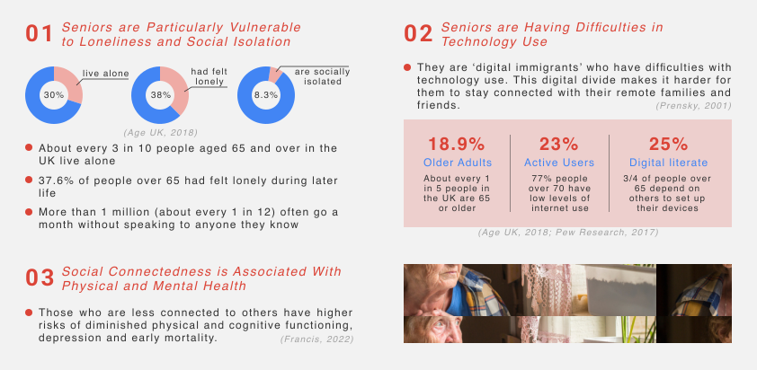
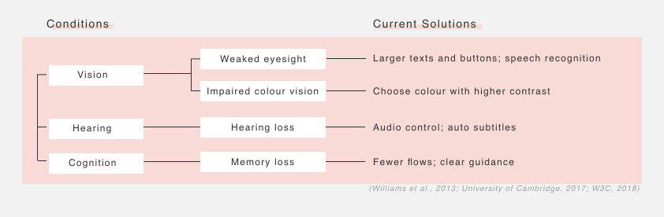
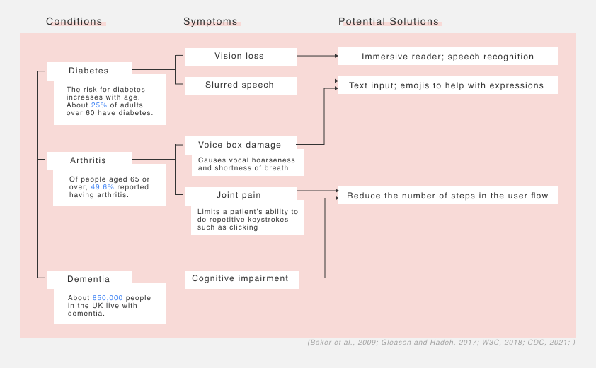

This is an ongoing interaction design project for my final year project.
Since the pandemic started, video-calling service has become so embedded in all parts of our life that it’s hard to imagine living without it. However, it has also brought the challenges faced by older adults to public attention.

To begin with, I looked through previous research to find out the common age-related physiological changes that seniors might have, as well as the current solutions.

Since my goal is to make Google Meet accessible to as many seniors as possible, I also did research on some age-related diseases that might deny seniors’ access to video calling services and came up some basic solutions.

...
Tool: